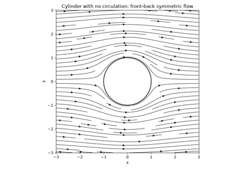
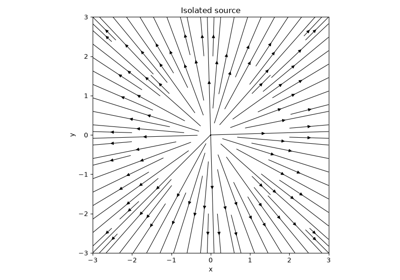
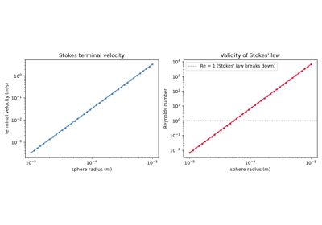
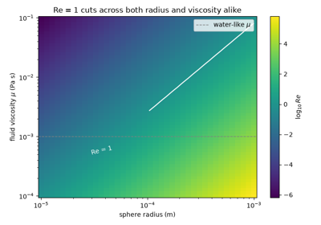
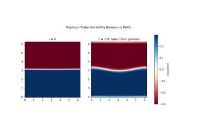
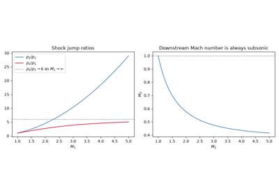
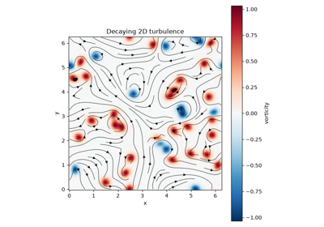

Breakthroughs in Fluid Dynamics#
“The internal motion of water assumes one or other of two broadly distinguishable forms – either the elements of the fluid follow one another along lines of motion which lead in the most direct manner to their destination, or they eddy about in sinuous paths the most indirect possible.” – Osborne Reynolds, An Experimental Investigation of the Circumstances which Determine whether the Motion of Water shall be Direct or Sinuous, 1883
From Daniel Bernoulli’s pressure-speed trade-off to Kolmogorov’s universal
law for the turbulent energy cascade, the physics behind
physicskit.fluids spans nearly three centuries of learning to
describe motion that never stops rearranging itself. Every stop below has a
pointer to the corresponding implementation in this package, so the theory
and the code stay next to each other rather than in separate documents.
1738 – Bernoulli’s Principle#
In Hydrodynamica, Daniel Bernoulli related a fluid’s pressure to its speed along a streamline: where the flow speeds up, pressure must drop, and vice versa, so that the sum of pressure, kinetic, and potential energy per unit volume stays constant. It is the single most quoted result in fluid mechanics – and, applied naively outside its assumptions (steady, incompressible, inviscid, along one streamline), also the most commonly mis-quoted – but within those assumptions it is exact, and it underlies every pressure calculation in this package’s inviscid-flow tools.
Implementation: physicskit.fluids.systems.potential_flow.pressure_coefficient()
implements exactly this trade-off as the dimensionless pressure coefficient
\(C_p = 1 - |\mathbf{u}|^2/U_\infty^2\), used throughout the potential-flow
tools (e.g. flow_past_cylinder())
to turn a computed velocity field into a pressure distribution.
References: D. Bernoulli, Hydrodynamica, sive de viribus et motibus fluidorum commentarii (Dulsecker, Strasbourg, 1738).
1752 – D’Alembert’s Paradox#
Jean le Rond d’Alembert applied the equations of inviscid, irrotational flow to steady motion past a closed body and found, to his own evident discomfort, that the theory predicts exactly zero net drag on the body no matter its shape – a flatly unphysical result for anything moving through a real fluid, which he presented to the Berlin Academy as an unresolved paradox rather than a triumph. The gap between this prediction and everyday experience persisted for a century and a half, until Prandtl’s boundary-layer theory below finally located the missing physics: drag is generated in a viscous layer too thin for the inviscid theory to see at all, not by the outer flow the theory does describe. Potential flow is not wrong within its own assumptions, in other words – it is simply silent about the one region where viscosity, however small, always matters.
Implementation: physicskit.fluids.systems.potential_flow.flow_past_cylinder()
with its default circulation=0.0 builds exactly the symmetric, inviscid
flow d’Alembert’s paradox describes; integrating the resulting surface
pressure (pressure_coefficient())
all the way around the cylinder gives exactly zero net force along the
free-stream direction, however finely the integral is resolved – the
viscosity that would break that symmetry is simply absent from the
calculation, and only reappears in this package’s
viscous_flow tools below.
References: J. le Rond d’Alembert, Essai d’une nouvelle théorie de la résistance des fluides (David, Paris, 1752).

D’Alembert’s paradox: zero net drag on a cylinder in inviscid flow
1757 – Euler’s Equations of Fluid Motion#
Leonhard Euler derived the equations of motion for an idealized fluid with
no internal friction, applying Newton’s second law to an infinitesimal
fluid parcel under pressure and body forces alone. Euler’s equations were
the first general mathematical description of fluid flow and remain exact
wherever viscosity is genuinely negligible – the regime this package’s
potential_flow and (for supersonic
flow) compressible_flow tools work in.
Implementation: physicskit.fluids.systems.potential_flow builds
solutions of the incompressible, irrotational limit of Euler’s equations by
superposition; physicskit.fluids.systems.compressible_flow solves
the compressible 1D form directly, discontinuities included.
References: L. Euler, “Principes généraux du mouvement des fluides,” Mémoires de l’Académie des Sciences de Berlin 11 (1757), 274-315.

Source, sink, and doublet: building blocks of potential flow
1851 – Stokes’ Law#
George Gabriel Stokes, the same year he began the viscous-fluid work that would culminate in the Navier-Stokes equations above, solved a much more specific problem exactly: steady, slow flow past a rigid sphere. At low enough Reynolds number that the nonlinear advection term is negligible next to viscous diffusion – the “creeping flow” limit – the equations reduce to the linear Stokes equations, \(\mu\nabla^2\mathbf{u} = \nabla p\), which Stokes solved in closed form for a sphere of radius \(R\) moving at speed \(v\) through a fluid of viscosity \(\mu\), giving a drag force
directly proportional to the sphere’s radius and speed, with no dependence on the fluid’s density at all – inertia has dropped out of the problem entirely. Stokes’ law underlies Robert Millikan’s oil-drop experiment – begun in 1909 but not published as the landmark measurement of the electron’s charge until 1910, and refined further in 1913 – the terminal velocity of sedimenting particles and raindrops, and (via the closely related Stokes-Einstein relation above) Einstein’s own 1905 treatment of Brownian motion.
Implementation: physicskit.fluids.systems.viscous_flow.stokes_drag()
implements exactly this closed-form drag law.
References: G. G. Stokes, “On the Effect of the Internal Friction of Fluids on the Motion of Pendulums,” Trans. Cambridge Phil. Soc. 9 (1851), 8-106; R. A. Millikan, “The Isolation of an Ion, a Precision Measurement of its Charge, and the Correction of Stokes’s Law,” Science 32 (1910), 436-448; R. A. Millikan, “On the Elementary Electrical Charge and the Avogadro Constant,” Phys. Rev. 2 (1913), 109-143.

Stokes drag and the terminal velocity of a settling sphere
1868 – 1871 – The Kelvin-Helmholtz Instability#
Hermann von Helmholtz (1868) and Lord Kelvin (1871) showed that any interface separating two fluid layers sliding past each other is unconditionally unstable to small ripples: the shear itself supplies the energy to grow the perturbation, with no threshold velocity required. Kelvin-Helmholtz instability is now recognized throughout nature and engineering – from billow clouds and the flapping edge of a flag to the turbulent mixing layer behind a jet engine – as the generic mechanism by which a thin shear layer rolls itself up into a row of discrete vortices. This content, too, previously lived in Breakthroughs in Classical and Quantum Field Theory.
Implementation: physicskit.fluids.systems.instabilities.kelvin_helmholtz_ic()
seeds exactly this thin, rippled shear layer;
kelvin_helmholtz_growth_rate()
gives the vortex-sheet linear growth-rate law; and
NavierStokes2D evolves the
seeded layer through the roll-up into discrete vortex cores, via the
dedicated simulate_kelvin_helmholtz()
wrapper built on the same pseudo-spectral vorticity-streamfunction engine.
physicskit.fluids.visualizers.flow_fields.animate_kelvin_helmholtz()
animates that roll-up directly, redrawing the vorticity field frame by
frame from a single smooth ripple to the fully separated “cat’s eye”
vortex row. See it in
Roll-up of a shear layer into vortex cores.
References: H. Helmholtz, “Über discontinuirliche Flüssigkeitsbewegungen,” Monatsberichte der Königlichen Preussischen Akademie der Wissenschaften zu Berlin 23 (1868), 215-228; W. Thomson (Lord Kelvin), “Hydrokinetic solutions and observations,” Phil. Mag. Ser. 4, 42(281) (1871), 362-377.
1883 – Reynolds’ Pipe-Flow Experiments#
Osborne Reynolds injected a thread of dye into water flowing through a glass pipe and watched it stay a smooth, straight filament at low flow rates but break up into chaotic swirls above a threshold – the transition from laminar to turbulent flow. Reynolds showed that the single dimensionless ratio now named for him, \(Re = UL/\nu\), controls exactly where that transition happens, regardless of the pipe’s size or the fluid’s identity: the founding result of dimensional-similarity reasoning in fluid mechanics, and the reason a scaled wind-tunnel model can predict a full-size aircraft’s behavior at all.
Implementation: physicskit.fluids.utils.dimensionless.reynolds_number()
computes exactly this ratio; nearly every other function in
physicskit.fluids is only valid in the Reynolds-number regime its
docstring specifies (Stokes’ law at \(Re \ll 1\), potential flow’s
irrotational assumption breaking down once boundary-layer separation sets
in at moderate-to-high \(Re\)).
References: O. Reynolds, “An Experimental Investigation of the Circumstances Which Determine Whether the Motion of Water Shall Be Direct or Sinuous…,” Phil. Trans. R. Soc. Lond. 174 (1883), 935-982.

The Reynolds number: one ratio, regardless of size or fluid
1902 – 1906 – The Kutta-Joukowski Lift Theorem#
Independently of each other, Martin Wilhelm Kutta (in an unpublished 1902 analysis) and Nikolai Zhukovsky (Joukowski, in a 1906 paper) showed that a two-dimensional body generating a net circulation \(\Gamma\) around itself in a stream of speed \(U_\infty\) experiences a lift force per unit span of exactly \(L' = \rho U_\infty \Gamma\), regardless of the body’s shape – true for any circulation, however it arises, and the theoretical foundation on which all of classical airfoil theory rests. Zhukovsky’s better-known 1910 paper is a distinct, later contribution: it applies the lift theorem to a specific family of realistic wing cross sections (the “Joukowski airfoils”) generated by a conformal map of a circle, rather than establishing the circulation-lift relation itself. Where that circulation actually comes from on a real airfoil (the Kutta condition, requiring smooth flow off a sharp trailing edge rather than the unphysical flow-around-a-corner potential theory would otherwise allow) is a separate, later piece of the story; the theorem above holds regardless of the mechanism that sets \(\Gamma\).
Implementation: physicskit.fluids.systems.potential_flow.kutta_joukowski_lift()
implements exactly this closed-form lift law, and is directly cross-checked
in this package by flow_past_cylinder()
with nonzero circulation: integrating that flow’s surface pressure
(pressure_coefficient()) all
the way around the cylinder reproduces the theorem’s prediction to numerical
precision.
References: M. W. Kutta, unpublished lecture notes (1902); N. E. Zhukovsky (Joukowski), “O prisoedinennykh vikhryakh” [“On Attached Vortices”], Trudy Otdeleniya Fizicheskikh Nauk Obshchestva Lyubitelei Estestvoznaniya 13(2), 12-25 (1906) – the original derivation of the lift theorem itself (exact page range not independently re-verified against the original Russian volume); N. Joukowski, “Über die Konturen der Tragflächen der Drachenflieger,” Zeitschrift für Flugtechnik und Motorluftschiffahrt 1 (1910), 281-284 (the later airfoil-shape paper).
1904 – Prandtl’s Boundary-Layer Theory#
Ludwig Prandtl proposed, in a paper presented at the 1904 International Congress of Mathematicians, that viscosity’s effects are confined to a thin layer next to a solid boundary even at very high Reynolds number, with the flow outside that layer well approximated as inviscid. This single observation reconciled two previously irreconcilable pictures of fluid flow – d’Alembert’s paradox-ridden inviscid theory, which incorrectly predicts zero drag on a body, and the full viscous equations, too difficult to solve directly for most engineering flows – and remains the conceptual foundation of essentially all aerodynamic and hydrodynamic design.
Implementation: physicskit.fluids.systems.viscous_flow is built
entirely around this thin-layer idea, from
couette_flow_velocity() and
poiseuille_flow_velocity()’s
exact internal-flow profiles to the boundary-layer solution below.
References: L. Prandtl, “Über Flüssigkeitsbewegung bei sehr kleiner Reibung,” Verhandlungen des III. Internationalen Mathematiker-Kongresses, Heidelberg 1904, Leipzig: Teubner (1905), pp. 484-491.
1908 – Blasius’s Exact Boundary-Layer Solution#
Paul Richard Heinrich Blasius, a doctoral student of Prandtl’s, found that Prandtl’s boundary-layer equations for the simplest possible case – steady flow over a flat plate with no imposed pressure gradient – admit a similarity solution: rescaling the wall-normal coordinate by \(\sqrt{\nu x/U_\infty}\) collapses the velocity profile at every downstream station onto one universal curve, reducing a partial differential equation to a single ordinary one. It remains the standard textbook benchmark for a boundary-layer solver.
Implementation: physicskit.fluids.systems.viscous_flow.blasius_solve()
solves exactly this similarity equation by a shooting method;
blasius_boundary_layer_thickness()
and blasius_skin_friction_coefficient()
convert the resulting profile into the classic
\(\delta_{99}\propto\sqrt{x}\) and \(c_f\propto Re_x^{-1/2}\) scalings.
References: H. Blasius, “Grenzschichten in Flüssigkeiten mit kleiner Reibung,” Zeitschrift für Mathematik und Physik 56 (1908), 1-37.
1883 / 1950 – The Rayleigh-Taylor Instability#
Lord Rayleigh’s 1883 linear stability analysis showed that a heavier fluid resting on top of a lighter one under gravity is unconditionally unstable, with a small interface ripple growing at rate \(\sigma=\sqrt{Agk}\) (the Atwood number \(A\) measures the density contrast); G. I. Taylor’s 1950 paper extended the analysis to a fluid accelerated in any direction, showing the same instability arises whenever the acceleration points from heavy fluid toward light. The instability now bears both names and is observed from a lava lamp’s plumes to the turbulent mixing layer inside a supernova remnant.
Implementation: physicskit.fluids.systems.instabilities.rayleigh_taylor_ic()
builds the rippled heavy-over-light interface;
rayleigh_taylor_growth_rate()
implements the linear growth-rate law above; and
simulate_rayleigh_taylor()
evolves the coupled Boussinesq vorticity-buoyancy system through the
instability’s characteristic mushroom-shaped plumes. Despite existing
alongside the Kelvin-Helmholtz tools above from the start, this
time-stepper had never actually been animated or plotted evolving until
physicskit.fluids.visualizers.flow_fields.animate_rayleigh_taylor()
was added, redrawing the buoyancy field – the field in which the rising
light plumes and falling heavy fingers are most visually distinct –
frame by frame from the rippled interface through the fully developed
mushroom plumes. See it in
Rayleigh-Taylor plumes from a heavy-over-light interface.
References: Lord Rayleigh (J. W. Strutt), “Investigation of the character of the equilibrium of an incompressible heavy fluid of variable density,” Proc. London Math. Soc. s1-14(1) (1883), 170-177; G. I. Taylor, “The instability of liquid surfaces when accelerated in a direction perpendicular to their planes. I,” Proc. R. Soc. A 201(1065) (1950), 192-196.

Rayleigh-Taylor plumes from a heavy-over-light interface
1858 – 1869 – Helmholtz’s and Kelvin’s Vortex and Circulation Theorems#
Hermann von Helmholtz showed that in an ideal (inviscid, barotropic) fluid, vortex lines move as if frozen into the fluid and the circulation around any closed material curve is conserved as that curve is carried along by the flow – vorticity can be stretched, tilted, and advected, but never created or destroyed in the fluid’s interior. Lord Kelvin gave the circulation-conservation result its cleanest general statement a decade later, now known as Kelvin’s circulation theorem, \(d\Gamma/dt = 0\) for any closed curve moving with an ideal fluid. Together these theorems are the reason a finite collection of point vortices is not merely a convenient numerical trick but an exact solution of the incompressible Euler equations, and they underlie every one of the vortex-dynamics results below, from the stability of the von Karman street to the simple orbiting and self-propelling vortex pairs it is built from.
Implementation: physicskit.fluids.systems.vortex_dynamics.point_vortex_velocities()
and PointVortexSystem
advance exactly this frozen-in, circulation-conserving dynamics: each point
vortex’s own circulation never changes, and it advects only with the
velocity induced by every other vortex, precisely as Helmholtz’s theorems
require.
References: H. Helmholtz, “Über Integrale der hydrodynamischen Gleichungen, welche den Wirbelbewegungen entsprechen,” J. Reine Angew. Math. 55 (1858), 25-55; W. Thomson (Lord Kelvin), “On Vortex Motion,” Trans. R. Soc. Edinb. 25 (1869), 217-260.
1911 – 1912 – The von Karman Vortex Street#
Henri Benard first observed the phenomenon experimentally in 1908, watching a staggered, alternating trail of vortices form in the wake behind a bluff body and reporting it simply as the flow “become[ing] turbulent” behind the obstacle, with no theoretical account of why the wake organized itself that way. Theodore von Karman’s 1911 analysis of that same staggered vortex trail – building on decades of vorticity and circulation theory following Helmholtz’s and Kelvin’s vortex theorems above – turned Benard’s qualitative observation into a quantitative stability calculation. Von Karman and Hans Rubach showed, in particular, that a doubly infinite staggered double row of alternating-sign vortices is linearly stable to vortex-row perturbations only at one specific spacing ratio, \(h/l \approx 0.2805\) – a configuration observed, to remarkable precision, behind essentially every real bluff body from a chimney to a violin string in the wind. Because the underlying flow was Benard’s experimental discovery three years before it was von Karman’s theory, the wake pattern is often more properly called the Benard-von Karman street. This content previously lived in Breakthroughs in Classical and Quantum Field Theory, illustrated there by a continuous vorticity field; it is illustrated here by the point-vortex N-body dynamics von Karman’s own analysis was originally framed in.
Wake behind a bluff body: staggered rows of alternating-sign vortices
(+) (+) (+) (+) <- top row, spacing l
(-) (-) (-) (-) <- bottom row, offset l/2,
separation h
flow ------------------->
von Karman's stability ratio: h / l = 0.2805
(the only spacing linearly stable to vortex-row perturbations)
Implementation: physicskit.fluids.systems.vortex_dynamics.von_karman_vortex_street()
builds exactly this staggered configuration at the stable spacing ratio
VON_KARMAN_SPACING_RATIO,
and PointVortexSystem
advances the resulting N-body Biot-Savart dynamics
(point_vortex_velocities())
forward in time.
References: H. Benard, “Formation de centres de giration à l’arrière d’un obstacle en mouvement,” C. R. Acad. Sci. 147 (1908), 839-842; T. von Karman, Nachr. Ges. Wiss. Göttingen, Math.-Phys. Kl. (1911), 509-517; T. von Karman and H. Rubach, “Über den Mechanismus des Flüssigkeits- und Luftwiderstandes,” Physikalische Zeitschrift 13 (1912), 49-59.
1870, 1887 – 1889 – The Rankine-Hugoniot Jump Conditions#
William Rankine (1870) first wrote down the mass and momentum conditions a steady one-dimensional discontinuity in a compressible flow must satisfy; Pierre Henri Hugoniot (1887, 1889) completed the picture by adding the energy condition, and derived the resulting pressure-density relation – the Hugoniot curve – that an ideal-gas shock must lie on. Together these conservation laws are what make a genuinely discontinuous solution of the compressible flow equations mathematically consistent, rather than merely a convenient idealization of a very thin, very fast transition region.
Implementation: physicskit.fluids.systems.compressible_flow.rankine_hugoniot_jump_conditions()
implements these conservation laws directly, as residuals for verifying a
candidate jump; normal_shock_relations()
solves them in closed form for an ideal gas as a function of the upstream
Mach number, and sod_shock_tube()
resolves the same jump dynamically inside a full Riemann-problem simulation.
References: W. J. M. Rankine, Phil. Trans. R. Soc. Lond. 160 (1870), 277-288; H. Hugoniot, Journal de l’École Polytechnique 57 (1887), 3-97, and 58 (1889), 1-125.

Normal shock relations across a range of Mach numbers
1922 – Richardson’s Qualitative Turbulent Cascade#
Lewis Fry Richardson, in Weather Prediction by Numerical Process, pictured turbulence as a hierarchy of eddies breaking down into ever-smaller ones, each generation of eddies handing its energy down to the next until the eddies are finally small enough for viscosity to dissipate it as heat – summarized in his famous verse, “Big whorls have little whorls that feed on their velocity, and little whorls have lesser whorls and so on to viscosity.” Richardson’s picture is entirely qualitative: it names the cascade and its direction without predicting any statistical law for it. That quantitative step – turning “little whorls have lesser whorls” into a specific, universal energy spectrum – had to wait nineteen years for Kolmogorov’s theory below.
Implementation: Richardson’s cascade has no closed-form law of its own to
implement; its first quantitative realization is exactly the spectral
tooling in the Kolmogorov entry below, where
energy_spectrum() measures
the energy actually flowing from Richardson’s “big whorls” down to his
“lesser whorls” in a simulated flow.
References: L. F. Richardson, Weather Prediction by Numerical Process (Cambridge University Press, Cambridge, 1922).

The Kolmogorov -5/3 cascade in decaying 2D turbulence
1941 – Kolmogorov’s Theory of the Turbulent Cascade#
Andrey Kolmogorov’s 1941 (K41) theory proposed that, far from whatever large-scale process forces a turbulent flow and far above the small scale where viscosity finally dissipates its energy, the statistics of turbulence in this “inertial range” depend on nothing but the rate at which energy cascades down from large eddies to small ones – a hypothesis of local isotropy and universality that dimensional analysis alone turns into a specific prediction. Andrey Obukhov, working independently that same year, derived the explicit spectral form this prediction takes: the kinetic energy spectrum’s famous \(-5/3\) power law, since verified in turbulent flows ranging from laboratory wind tunnels to the solar wind.
Implementation: physicskit.fluids.utils.spectral_analysis.energy_spectrum()
measures exactly this quantity, the azimuthally averaged kinetic energy
spectrum of a 2D velocity field, and
kolmogorov_reference_slope()
draws the \(k^{-5/3}\) reference line the measured spectrum is checked
against – reproduced, in this package’s gallery, from nothing but a
randomly seeded vorticity field evolved under
NavierStokes2D.
References: A. N. Kolmogorov, Doklady Akademii Nauk SSSR 30 (1941), 301-305, and 32 (1941), 16-18 (reprinted Proc. R. Soc. A 434 (1991), 9-13 and 15-17); A. M. Obukhov, Doklady Akademii Nauk SSSR 32 (1941), 22-24.
The Kolmogorov -5/3 cascade in decaying 2D turbulence
See Also#
Breakthroughs in Classical and Quantum Field Theory (the Navier-Stokes, Kelvin-Helmholtz, and von Karman entries above moved here from that chronology)
Breakthroughs in Chaos Theory and Dynamical Systems (shared KAM/turbulence-adjacent territory: both chronologies end at the boundary between orderly and chaotic motion, one in phase space and one in real space)